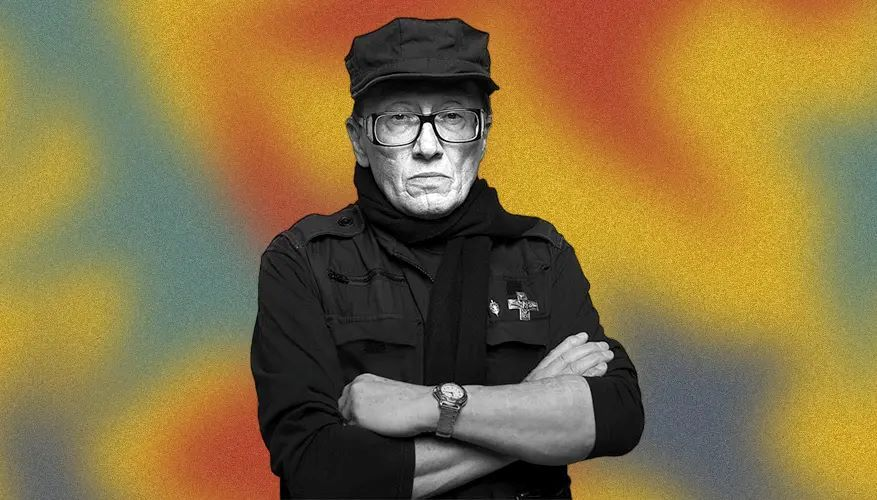
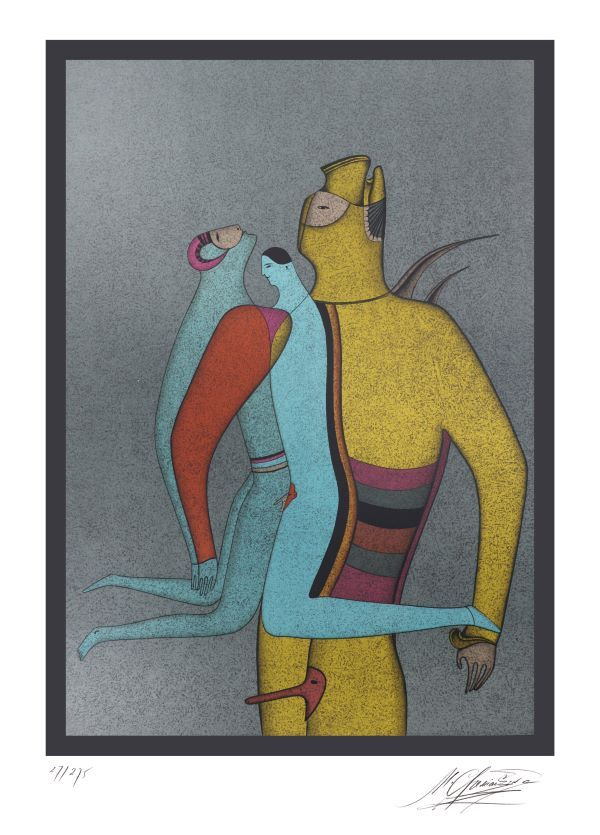
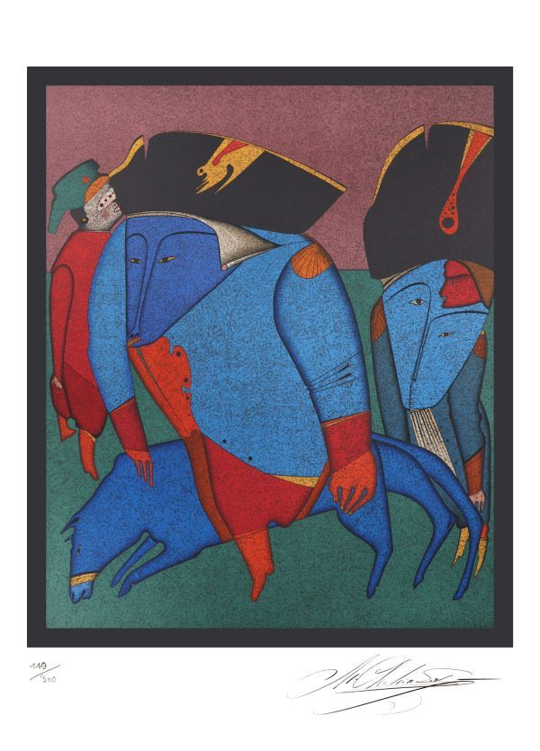
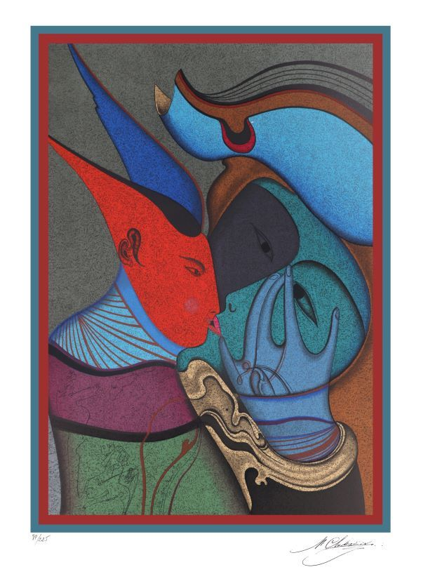
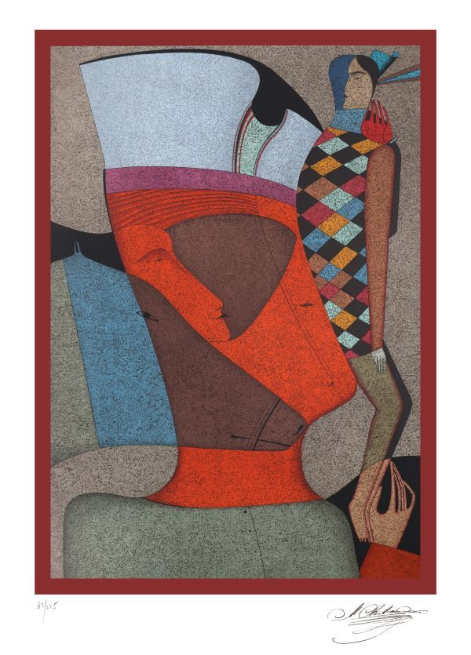
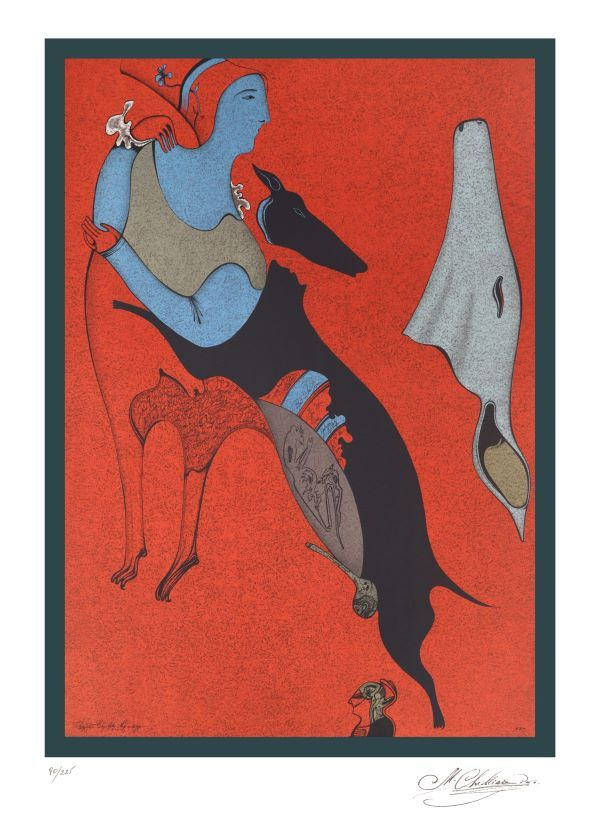
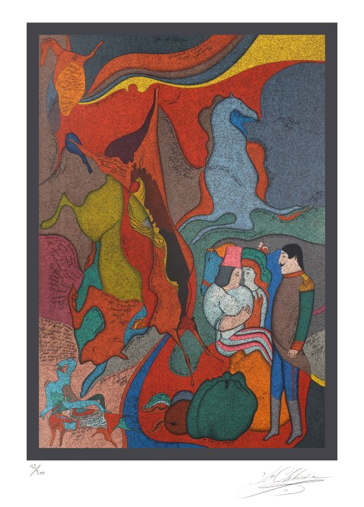

Сергей Грибняков: Искусство в бизнесе. Коллекционер и владелец холдинга Санлайт
Сегодня мы беседуем с Сергеем Грибняковым — человеком, который перевернул представление о корпоративной культуре и привнес в офис нечто большее, чем просто стены и мебель

Сегодня мы беседуем с Сергеем Грибняковым — человеком, который перевернул представление о корпоративной культуре и привнес в офис нечто большее, чем просто стены и мебель. Его путь в мир современного искусства оказался не только увлекательным, но и вдохновляющим для коллег и партнеров. В интервью Сергей рассказывает, как коллекция подлинных литографий Михаила Шемякина появилась в его жизни и что она принесла в повседневную работу.
— Сергей, как всё начиналось? Почему именно современное искусство и Михаил Шемякин?
— Всё началось с того, что я решил создать в своем офисе нечто большее, чем просто рабочее пространство. Мне хотелось, чтобы сотрудники чувствовали себя вдохновленными, чтобы пространство стимулировало креативность и новым идеям. Искусство всегда было частью моей жизни, я любил посещать галереи и выставки, но тогда я не думал о коллекционировании. Однако, однажды, я задумался, что может быть лучше, чем окружить коллег и сотрудников чем-то, что не только красиво, но и заставляет задуматься.
Именно тогда я познакомился с творчеством Михаила Шемякина. Его работы — это глубокие философские размышления, которые переплетаются с уникальной техникой исполнения. Я увидел в его произведениях не просто картины, а целые истории, которые можно интерпретировать по-разному. Шемякин идеально сочетает креативность, традиции и современные тенденции, и я понял, что его работы могут стать не просто украшением, но и мощным источником для обсуждения и вдохновения в нашем коллективе.

— Вы решили купить коллекцию литографий, и это оказалось не случайностью. Что именно вас привлекло в этих произведениях?
— Да, это был не случайный выбор. Я решил приобрести коллекцию подлинных литографий Михаила Шемякина, отпечатанных во Франции в разные годы. Эти работы глубоко отличаются от множества произведений, которые можно увидеть в масс-маркете. Литографии — это не просто изображения, это целые размышления, которые отражают концептуальный подход художника. Каждая работа уникальна в своей композиции, в исполнении, в цвете и в посыле.
Кроме того, литографии как техника мне всегда были интересны. Это сложный и тонкий процесс, который требует высокой профессиональной подготовки, и для меня было важно, что эти работы — настоящие, а не копии. Ведь оригинальность всегда ценится, особенно когда речь идет о таких сильных произведениях. Я хотел, чтобы сотрудники чувствовали, что они имеют дело с чем-то подлинным, с настоящим искусством, которое имеет свою историю.


— Как именно эта коллекция повлияла на атмосферу в вашем офисе и на ваших сотрудников?
— Я сразу заметил, как изменилось восприятие пространства. Работы Шемякина добавили не просто эстетической ценности, но и дали глубину тому, что происходит в офисе. Они стали не просто декором, а настоящими точками опоры для разговоров, обсуждений и вдохновения. Вдохновившись произведениями, сотрудники стали проявлять больше креативности, интереса к новым идеям и улучшению качества работы.
Также, я заметил, что люди, которые раньше не интересовались искусством, начали по-другому смотреть на окружающий мир. Я даже устроил небольшие экскурсии по офису, рассказывая о тех или иных произведениях Шемякина. Это стало поводом для интересных разговоров, помогло людям увидеть, как важно искать смысл даже в самых простых вещах.


— Что вы посоветовали бы тем, кто хотел бы добавить искусство в корпоративное пространство?
— Я бы посоветовал не бояться экспериментировать. Искусство должно быть не только красивым, но и содержательным. Это не просто декор, это возможность для глубоких размышлений. Работы, которые выбраны для офиса, должны быть не просто украшением, но и вдохновлять людей на новые идеи. И, конечно, я считаю, что искусство должно быть подлинным — это даёт глубину восприятия. Подлинные произведения всегда оставляют след, они стимулируют креативность, они заставляют задуматься.
Возможно, стоит начать с чего-то маленького и выбрать произведения, которые вам близки. Главное, чтобы это было не просто покупкой, а осознанным шагом, который вдохновит вашу команду и будет служить не только украшением, но и источником новых мыслей и идей.


— Сергей, в конце концов, как эта коллекция изменяет вашу работу и вашу компанию в целом?
— Я считаю, что искусство, которое окружает нас, напрямую влияет на наше восприятие мира и наших задач. В нашем случае, коллекция Шемякина стала не просто украшением. Она стала частью нашей корпоративной культуры, частью философии работы. Мы как команда стали более открытыми к новому, к нестандартным решениям и новым подходам. Это ощущение свободы и глубины искусства передается и на рабочие процессы.
Я бы сказал, что искусство, в том числе и современное, помогает нам раскрывать новые горизонты, не только в творчестве, но и в бизнесе. Это помогает нам быть не просто частью рыночной динамики, а понимать, как создавать и влиять на окружающий мир.
— Спасибо за интересное интервью, Сергей. Ваш опыт вдохновляет.
— Благодарю вас, рад был поделиться своим опытом. Искусство действительно может изменить всё.